금속재료기사 (2017-05-07 기출문제)
1과목: 금속조직학
1. 철강의 마텐자이트 변태의 특징이 아닌 것은?
- 결정구조의 변화
- 과포화 탄소의 고용
- 모상과 일정한 방위관계
- 탄소의 함량증가에 따라 Ms 온도의 상승
(정답률: 71%)

2. ASTM 규정에서 결정입도 번호가 8일 때 배율 100배로 촬영한 1 in2 면적당 평균 결정립 수(n)는 몇 개 인가?
- 32개
- 64개
- 128개
- 256개
(정답률: 81%)
3. Fe-C평형 상태도에서 순철의 동소변태는 모두 몇 개 인가?
- 0
- 1
- 2
- 3
(정답률: 82%)
4. 일반적으로 재료 내부에는 재료의 특성과 주어진 조건(온도, 압력 등)에 따르는 평형결함농도가 존재한다. 평형결함농도 이상의 결함이 존재할때 관찰되는 현상이 아닌 것은?
- 전기저항의 증가
- 탄성계수의 증가
- 열전도도의 감소
- 기계적 성질의 향상
(정답률: 72%)
5. 용질원자가 용매원자에 고용되는 정도를 결정하는 중요 요소가 아닌 것은?
- 개재물
- 결정구조
- 원자의 크기
- 원자의 전기음성도
(정답률: 83%)
6. 고온의 불규칙상태의 고용체를 천천히 냉각하면 어느 온도에서 규칙격자가 형성되기 시작하는 이 온도의 명칭은?
- 규칙온도
- 천이온도
- 변형온도
- 불규칙온도
(정답률: 85%)
7. Al 금속이 응고 할 때 결정이 성장하는 우선 방향은?
- [100]
- [001]
- [011]
- [111]
(정답률: 74%)
8. 재결정에 관한 설명 중 틀린 것은?
- 가공도가 크면 결정이 미세화 된다.
- 금속의 순도가 높을수록 재결정온도는 증가한다.
- 재결정 일으키는 데에는 최소한의 변형이 꼭 필요하다.
- 변형 정도가 작을수록 재결정을 일으키는데 필요한 온도는 높아진다.
(정답률: 81%)
9. 체심입장정인 단결정에서 슬립(slip)이 잘 일어나는 방향은?
- [100]
- [110]
- [111]
- [122]
(정답률: 68%)
10. FCC 금속에서 관찰되지 않는 결함은?
- annealing twin(어닐링 쌍정)
- mechanical twin(기계적 쌍정)
- intrinsic stacking fault(내재성 적층결함)
- extrinsic stacking fault(외재성 적층결함)
(정답률: 74%)
11. 면심입장격자의 배위수는 몇 개인가?
- 4
- 8
- 12
- 16
(정답률: 87%)
12. 확산계수(D)의 단위로 옳은 것은?
- cal/mole
- erg/cm2
- joule/atom
- cm2/sec
(정답률: 90%)
13. Fe-C 평형상태도에서 γ고용체에서 시멘타이트 변태가 일어나는 선은?
- A1 변태선
- A2 변태선
- Acm 변태선
- A3 변태선
(정답률: 80%)
14. 순동을 냉간 가공한 다음 상온에서 고온으로 천천히 계속 가열할 때 에너지를 가장 많이 방출하는 과정은?
- 잠복기
- 회복 과정
- 재결정 과정
- 결정립 성장 과정
(정답률: 82%)
15. 포정반응이 공정반응보다 응고속도가 대단히 느린 가장 큰 이유는?
- 과냉속도가 낮기 때문이다.
- 용해온도가 같기 때문이다.
- 석출을 필요로 하기 때문이다.
- 고체 내 확산을 필요로 하기 때문이다.
(정답률: 89%)
16. 다음 그림과 같은 상태도는 액상(L1) ⇆ 액상(L2) + 고상(S) 일 때 어떤 반응의 상태도인가? (단, S는 고상, L1과 L2는 액상이다.)
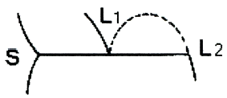
- 공정반응
- 공석반응
- 포정반응
- 편정반응
(정답률: 74%)
17. 구리 및 구리합금의 현미경 조직 시험의 부식제로 가장 적합한 것은?
- 나이탈
- 염산 용액
- 수산화나트륨 용액
- 염화제2철 용액
(정답률: 84%)
18. 물의 상태도에서 3중점의 Gibbs 상률은?
- 0
- 1
- 2
- 3
(정답률: 91%)
19. 다음의 밀러 지수 중 면간 거리가 가장 가까운 것은?
- (010)
- (120)
- (220)
- (130)
(정답률: 80%)
20. 규칙격자가 생기면 전기전도도가 커지는 가장 큰 이유는?
- 풀림을 단시간에 처리하므로
- 고온에서 핵생성이 촉진되므로
- 전도전자의 산란이 적어지므로
- 불규칙격자의 상화치환이 활발하므로
(정답률: 90%)
2과목: 금속재료학
21. 고속도공구강에 대한 설명 중 틀린 것은?
- 대표적인 표준 조성으로는 18%W-4%Cr-1%V 이다.
- 적열경도를 유지시키기 위하여 W을 첨가한다.
- 내산화성과 경도를 높이기 위하여 Pb을 첨가한다.
- 고속도공구강은 고합금강이며 고속절삭에 사용한다.
(정답률: 64%)
22. Mg 및 그 합금에 대한 설명으로 옳은 것은?
- Mg은 실용재료로 비중이 약 8.5로 무거운 금속이다.
- 비강도(比强度)가 작아서 휴대용 기기나 항공우주용 재료로는 사용할 수 없다.
- Mg은 고온에서 매우 비활성이므로 분말이나 절삭설은 발화의 위험이 없다.
- 고순도의 제품에서는 내식성이 우수하나 저순도 제품에서는 떨어지므로 표면피막 처리가 필요하다.
(정답률: 81%)
23. Al-Cu-Si계 합금으로서 Si를 넣어 주조성을 개선하고 Cu를 첨가하여 피삭성을 향상시킨 합금은?
- Y합금
- 라우탈(Lautal)
- 로엑스(Lo-Ex)합금
- 하이드로날륨(Hydronalium)
(정답률: 74%)
24. 베어링용 합금 중에서 고하중 고속전용 베어링으로 적합하며 주석계 화이트 메탈이라 불리우는 합금은?
- 오일라이트(oilite)
- 바이메탈(bimetal)
- 반메탈(bahn metal)
- 베빗메탈(babbit metal)
(정답률: 88%)
25. Fe52%, Ni36%, Cr12%의 합금으로 고급시계나 정밀저울 등의 스프링 및 정밀기계 부품에 사용하는 것은?
- 엘린바
- 라우탈
- 덕타일
- 미하나이트
(정답률: 75%)
26. 경질 합금의 소결 고온압착법(Hot Press Method)에 대한 설명으로 틀린 것은?
- 완성치수와 가까운 형상의 것을 얻을 수 있다.
- 로 내에서 1개씩 소결되므로 다량 생산방식을 사용할 수 없다.
- 소결온도와 압력을 잘못 조절하면 액상이 주위에 배어 나와 편석을 일으킨다.
- 조직이 조대하고 경도는 향상되며, 상온에서 압착한 소결체보다 표면조도가 낮다.
(정답률: 71%)
27. 5~20%Zn 황동으로 빛깔이 금빛에 가까우며 금박 및 금분의 대용품으로 사용되는 것은?
- 톰백(tombac)
- 문쯔 메탈(muntz metal)
- 하드 브라스(hard brass)
- 델타 메탈(delta metal)
(정답률: 74%)
28. 반도체 기판으로 사용되며 단결정, 다결정, 비정질의 3종으로 사용되는 금속은?
- W
- Si
- Ni
- Cr
(정답률: 89%)
29. 강과 비교하여 회주철의 특징을 설명한 것 중 틀린 것은?
- 감쇠능이 크다.
- 피삭성이 좋다.
- 탄성계수가 높다.
- 인장강도에 비해 압축강도가 높다.
(정답률: 58%)
30. 주철의 성장을 방지하는 방법으로 틀린 것은?
- C 및 Si의 양을 적게 한다.
- 구상흑연을 편상화시킨다.
- 흑연의 미세화로 조직을 치밀하게 한다.
- Cr, Mo, V 등을 첨가하여 펄라이트 중의 Fe3C 분해를 막는다.
(정답률: 75%)
31. 정적인 하중으로 파괴를 일으키는 응력보다 훨씬 낮은 응력으로도 반복하여 하중을 가하면 결국 재료가 파괴되는 현상은?
- 피로 현상
- 에릭션 현상
- 항복 응력 현상
- 크리프 한도 현상
(정답률: 87%)
32. 강중에 비금속 개재물의 영향을 설명한 것으로 틀린 것은?
- 재료 내부에 점재하여 인성을 해친다.
- 강에 백점이나 헤어 크랙의 원인이 된다.
- 산화철, 알루미나 등은 단조나 압연 중에 균열을 일으킨다.
- 열처리 하였을 때 개재물로부터 균열을 일으키기 쉽다.
(정답률: 75%)
33. 분말야금법(Powder Metallurgy)에 대한 설명으로 틀린 것은?
- 경하고 취약한 금속제품의 단조가 가능하다.
- 통상의 용융방법으로는 얻을 수 없는 고융점 금속재료의 제조에 응용할 수 있다.
- 재료를 용해하지 않으므로 용기나 탈산제 등에서 오는 불순물의 혼입이 없어 순수한 금속을 제조할 수 있다.
- 부분적 용해는 있으나 전부 또는 대부분이 용해되는 일이 없으므로 각 성분금속의 배합비대로 또한 분말의 혼합이 균일하면 균일제품이 얻어진다.
(정답률: 63%)
34. 철강에 함유되는 원소 중 Fe와 반응하여 저융점의 화합물을 형성하여 열간가공 시에 고온(적열)취성을 일으키는 원소는?
- N
- S
- O
- P
(정답률: 80%)
35. 쾌삭강(free cutting steel)에 관한 설명으로 틀린 것은?
- 연(Pb)쾌삭강에서 Pb는 미립자로 존재한다.
- 황복합쾌삭강은 S와 Pb를 동시에 첨가한 초쾌삭강이다.
- 황쾌삭강에서 MnS는 열간가공시 압연방향과 직각방향의 기계적 성질을 다르게 한다.
- 칼슘쾌삭강은 쾌삭성을 높이고 기계적성질을 저하시킨 강이다.
(정답률: 72%)
36. 다음 중 Ag-Cu 합금에 해당되는 것은?
- 스텔라이트(stellite)
- 핑크골드(pink gold)
- 스털링 실버(sterling silver)
- 화이트 골드(white gold)
(정답률: 81%)
37. 초강인강에 있어 예리한 노치를 넣은 다음 항복강도보다 낮은 정적 인장응력을 가하면 어느 시간 후에 갑자기 파괴되는 지체파괴(delated fracture)현상이 나타난다. 이러한 지체파괴의 원이을 설명한 것 중 틀린 것은?
- 잔류응력이 있을 때
- 응력집중부가 있을 때
- 압축응력이 있을 때
- 강재의 강도수준이 높을 때
(정답률: 49%)
38. 질화강(nitriding steel)의 특징으로 옳은 것은?
- 경화층은 두껍고 경도가 침탄 한 것보다 낮다.
- 마모 부식에 대한 저항이 낮다.
- 피로강도가 크다.
- 고온강도가 낮다.
(정답률: 62%)
39. 금속의 일반적 특성이 아닌 것은?
- 전기의 양도체이다.
- 연성 및 전성이 크다.
- 금속 고유의 광택을 갖는다.
- 액체 상태에서 결정구조를 가진다.
(정답률: 84%)
40. 게이지용 강의 특징을 설명한 것 중 틀린 것은?
- 내식성이 좋을 것
- 마모성이 크고 경도가 높을 것
- 담금질에 의한 변형이 적을 것
- 오랜 시간 경과하여도 치수의 변화가 적을 것
(정답률: 76%)
3과목: 야금공학
41. 다음 식 가운데 키르히호프 법칙(Kirchhoff’s Law)을 나타낸 식은?
- dH = dQ + Vdp
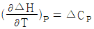
- △H = △E + △(PV)
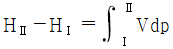
(정답률: 69%)
42. 다음 중 열역학 제 3법칙에 해당되는 것은?
- 열역학적으로 내부 평형상태에 있는 계의 엔트로피 값은 절대온도 0 K에서 0 이다.
- 열역학적으로 내부 평형상태에 있는 겨의 엔트로피 값은 절대온도 0 K에서 (+)값을 갖는다.
- 순수하고 완전한 결정형 고체는 절대온도 0 K에서 (+)의 엔트로피 값을 갖는다.
- 순수하고 완전한 결정형 고체는 절대온도 0 K에서 (-)의 엔트로피 값을 갖는다.
(정답률: 86%)
43. 이상요액의 증기압과 몰분율사이의 관계를 나타내는 식은?
- PA = XA PAo
- γe(A) = kPAo
- PA = kAo XA
- PA = kAo XA PAo
(정답률: 73%)
44. “어떤 일정 온도에서 혼합기체가 나타내는 전체압력 P는 그 성분 기체들의 분압의 합과 같다.” 라는 것은 어떤 법칙인가?
- 달톤의 분압법칙
- 반델발스 분압법칙
- 아보가드로의 분압법칙
- 게이-루삭의 분압법칙
(정답률: 81%)
45. 이상기체 1 mole 이 25℃에서 10L 로부터 100L 로 가역 등온 팽창 시켰을 때의 △S의 값은? (단, 기체상수 R = 1.987 cal/mole·K 이다.)
- 4.575 cal/mole·K
- 45.75 cal/mole·K
- 9.152 cal/mole·K
- 91.52 cal/mole·K
(정답률: 63%)
46. 다음 내화물 중 열전도도가 가장 큰 것은?
- 규석
- 샤모트
- 마그네시아
- 카보랜덤
(정답률: 59%)
47. 청화액에 용해된 금이나 은의 회수 방법에서 이온화 경향의 차를 이용할 때 사용되는 것은?
- 황화물
- 아연 분말
- 활성 탄소
- 이온교환수지
(정답률: 60%)
48. 열역학 제 1법칙은 어느 것과 관계되는 법칙인가?
- 포화증기압
- 열의 이동방향
- 실내의 습도
- 에너지의 보존
(정답률: 87%)
49. 용선과 고철을 주원료로 하고 순산소를 취입하여 정련하는 제강법은?
- 반사로
- 전기로
- 전로
- 평로
(정답률: 80%)
50. 다음 중 활동도(a)에 대한 설명으로 틀린 것은?
- 표준상태에서 a = 1 이면 p = po 이다.
- 이상용액에서 aA = NA(A의 몰분율) 이다.
- 고용체에서 a는 농도에 따라 변하지 않는다.
- a = 0 이면 그 성분의 증기압은 0 으로 볼 수 있다.
(정답률: 75%)
51. 다음의 평형반응을 오른쪽으로 진행시키기 위한 조건은? (단, △Ho = -192 kJ 이다.)
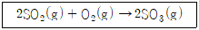
- 압력 감소와 온도증가
- 압력 증가와 온도증가
- 압력 감소와 온도감소
- 압력 증가와 온도감소
(정답률: 69%)
52. Fe2O3 에 함유된 산소의 양은 약 몇 wt% 인가? (단, Fe : 56g/mole, O : 16g/mole 이다.)
- 70
- 30
- 21
- 16
(정답률: 83%)
53. 반응 A(solid) = 3B(gas) + C(gas) 가 평형상태에서 전압(全壓)을 P라 할 때 평형상수 KP는?
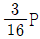
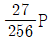
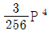
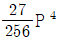
(정답률: 59%)
54. 완전 기체의 혼합 자유에너지의 변화
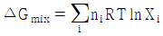
에서 여러 가지 성분의 기체가 자발적으로 혼합하려면?- △Gmix와 관계없다.
- △Gmix가 0 이어야 한다.
- △Gmix가 양의 값이어야 한다.
- △Gmix가 음의 값이어야 한다.
(정답률: 76%)
55. 다음 중 염기성 내화물에 해당하는 것은?
- 규석질
- 납석질
- 샤모트질
- 마그네시아질
(정답률: 80%)
56. 비커에 있는 더운 물을 다른 비커에 있는 찬 물과 혼합할 때 혼합과정에서의 엔트로피 변화는?
- 증가한다.
- 감소한다.
- 변화가 없다.
- 알 수 없다.
(정답률: 76%)
57. 가스 중 CO 26.0%, CO2 16.0% 일 때 이 가스 1m3 중의 탄소량은?
- 0.0347 kg
- 0.225 kg
- 0.784 kg
- 1.232 kg
(정답률: 58%)
58. 다음 중 맥스웰 방정식(Mexwell equation)이 틀린 것은?
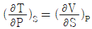
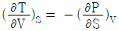
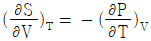
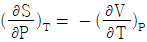
(정답률: 50%)
59. 다음 열역학적 성질을 나타내는 상태함수 중 세기성질(intensive property)이 아닌 것은?
- 압력
- 온도
- 부피
- 몰분율
(정답률: 64%)
60. 중금속비화물이 균일하게 녹아 있는 인공적인 혼합물이며, Ni, Co, Pb 등의 용융 제련에서 생길 수 있는 것은?
- 매트
- 용제
- 황산염
- 스파이스
(정답률: 75%)
4과목: 금속가공학
61. 일반적으로 금속의 단결정에서 탄성율이 최대가 되는 방향은?
- [111]
- [110]
- [100]
- [101]
(정답률: 77%)
62. 주석울음(tin-cry) 현상은 어느 변형에 속하는가?
- 슬립변형
- 쌍정변형
- 탄성변형
- 마텐자이트변형
(정답률: 78%)
63. 금속 재료의 피로에 관한 설명 중 틀린 것은?
- 지름이 크면 피로 한도는 작아진다.
- 노치가 있는 시험편의 피로 한도는 크다.
- 표면이 거친 것이 고운 것보다 피로한도가 작아진다.
- 노치가 없을 때와 있을 때의 피로 한도 비를 노치계수라 한다.
(정답률: 64%)
64. 완전전위가 두 개의 부분전위로 분해되면 두 부분전위는 두 부분전위 사이의 반발력과 인력이 균형을 이루는 폭(간격)으로 존재한다. 이 때 두 부분전위를 확장전위라 부르는데, FCC에서 확장나선전위의 교차슬립에 관한 설명 중 틀린 것은?
- 적층결함에너지가 클수록 교차슬립이 잘 일어난다.
- 부분전위 사이의 폭이 클수록 교차슬립이 잘 일어난다.
- Al. Ni 등의 금속은 적층결함에너지가 크기 때문에 교차슬립이 잘 일어난다.
- 황동(brass)은 적층결함에너지가 작기 때문에 교차슬립이 잘 일어나지 않는다.
(정답률: 71%)
65. 재료 내의 3개의 최대전단응력 중 어느 하나의 최대전단응력이 일정한 값에 이르면 항복이 일어난다는 항복 조건설은?
- Fink 의 항복조건
- Tresca 의 항복조건
- Ekelund 의 항복조건
- Nises – Hencky 의 항복조건
(정답률: 81%)
66. 나사나 기어 등을 제작할 때의 가공법으로 옳은 것은?
- 단조
- 전조
- 압출
- 인발
(정답률: 76%)
67. 재료가 초소성(super plasticity)을 나타낼 수 있는 조건으로 틀린 것은? (단, Tm은 절대 융점이다.)
- 고온이어야 할 것(T ＞ 0.4 Tm)
- 변형속도가 10-2/초 이하일 것
- 결정립이 수 μm 이하로 매우 미세할 것
- 비등축 결정이며, 변형 중 현미경 조직이 불안정할 것
(정답률: 78%)
68. 금속을 냉간가공하면 재료가 강화되는 이유를 옳게 설명한 것은?
- 모상에서 석출물이 형성되기 때문이다.
- 결정입자가 가공에 의해 조대화되므로 강화된다.
- 전위밀도가 증가하고 입자가 미세화되기 때문이다.
- 입자가 조대화되면서 전위밀도가 급증하기 때문이다.
(정답률: 80%)
69. 다이(die)의 구멍을 통하여 소재를 잡아 당겨 단면적을 줄이는 가공방법은?
- 압연
- 단조
- 인발
- 프레스
(정답률: 83%)
70. 소성체 경계의 표면에서 최대 전단응력 방향과 일치하는 슬립선은 주응력 방향과 몇 도를 이루며 일어나는가?
- 0°
- 45°
- 60°
- 90°
(정답률: 72%)
71. 고온크리프의 변형 기구에 해당되지 않는 것은?
- 전위의 상승
- 공공의 확산
- 쌍정의 발생
- 결정 입계의 미끄럼
(정답률: 58%)
72. 재료의 가공경화는 다음 중 어떤 현상에 기인하는가?
- 결정립 크기의 감소
- 적층결함에너지의 증가
- 재료 내 전위밀도의 증가
- 불순물 원자에 의한 전위 고착
(정답률: 76%)
73. 최초 단면적이 60cm2 이던 강봉이 축방향으로 인장을 받아 단면적이 52cm2 로 줄었다. 체적이 일정하다면 축방향의 진변형률(true strain)은?
- 0.143
- 1.43
- 14.3
- 141.3
(정답률: 59%)
74. HCP(조밀육방정)에서 완전 전위의 Burger 벡터 a0
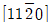
가 2개의 shockley 부분 전위로 분해되는 반응식이 옳은 것은?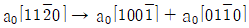
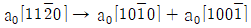
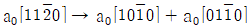
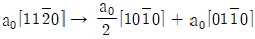
(정답률: 76%)
75. 로크웰 경도시험에 대한 설명으로 틀린 것은?
- 기준하중은 98.07N 이다.
- C 스케일의 경우 HRC로 표기한다.
- 스케일 A, B, C 의 시험하중은 모두 같다.
- 다이아몬드 원추 압입자의 각도는 120° 이다.
(정답률: 83%)
76. 취성 금속재료의 파괴가 표면 조건에 따라 민감하게 변화하는 현상은?
- 조폐(Joffe) 효과
- 스즈키(Suzuki) 효과
- 변형률 민감도 효과
- 텍스쳐(texture) 효과
(정답률: 75%)
77. 가공경화(work hardening)와 관련이 적은 것은?
- 변형저항의 감소
- 경도의 증가
- 스테리인 경화
- 탄성한계의 상승
(정답률: 46%)
78. 상온에서 큰 소성변형을 받은 재료를 어닐링하면 재결정이 일어나느데, 이 때의 구동력으로 옳은 것은?
- 회복현상
- 표면에너지
- 입계에너지
- 축적에너지
(정답률: 74%)
79. 충격에너지를 구하는 식으로 옳은 것은? (단, W : 해머의 무게(kg), R : 해머의 회전축 중심에서의 해머의 중심까지의 거리(m), α : 해머를 올렸을 때의 각도, β : 시험편 파괴 후 해머가 올라간 각도이다.)
- WR(sinα - sinβ)
- WR(sinβ - sinα)
- WR(cosα - cosβ)
- WR(cosβ - cosα)
(정답률: 86%)
80. 압출 과정에서 마찰이 너무 크거나 소재의 냉각이 심한 경우 제품 표면에 산화물이나 불순물이 중심으로 빨려 들어가 생기는 결함은?
- 셰브런(Chevron)
- 표면 균열(Surface crack)
- 에지 크랙(Edge crack)
- 파이프 결함(Pipe defect)
(정답률: 75%)
5과목: 표면공학
81. 화학적 기상도금(CVD)의 반응 형식에 속하지 않는 것은?
- 치환반응
- 액체확산
- 수소환원
- 반응증착
(정답률: 75%)
82. TEM에서는 다양한 회절패턴을 얻을 수 있다. 보기는 어떤 패턴에 관한 설명인가?
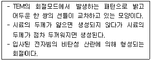
- Ring 패턴
- Kikuchi 패턴
- SAD(Selected Area Diffraction) 패턴
- CBED(Convergent Beam Electron Diffraction) 패턴
(정답률: 71%)
83. 강의 뜨임 열처리 목적으로 옳은 것은?
- 연화 작업
- 표준화 작업
- 인성부여 작업
- 경도부여 작업
(정답률: 70%)
84. 플라스틱에 금속으로 전기도금하기 위해서는 화학적으로 금속화 처리를 해야 한다. 에칭된 플라스틱 표면에 감수성(Sensitizing)과 촉매를 부여하던 것을 주석과 팔라듐을 혼합하여 분산시켜 사용하는 처리방법은?
- 무전해 도금
- 에칭(Egching)
- 예비침지(Pre Dip)
- 캐탈리스팅(Catalysting)
(정답률: 68%)
85. 다음 중 전기 음성도가 큰 금속은?
- K
- Au
- Al
- Mg
(정답률: 55%)
86. 직류 스퍼터링에 관한 설명으로 틀린 것은?
- 조성이 복잡한 것도 적용이 가능하다.
- 전류량과 생성피막의 두께가 정비례한다.
- 타깃(Target)은 금속과 비금속(세라믹 등) 모두 가능하다.
- 고에너지로 기판에 들어오게 되므로 밀착강도가 높다.
(정답률: 68%)
87. 질화법에 대한 설명으로 옳은 것은?
- 질화 후에 수정이 가능하다.
- 침탄층의 경도는 질화층보다 높다.
- 처리강의 종류에 많은 제한을 받는다.
- 질화 후에 열처리가 필요하다.
(정답률: 70%)
88. 아노다이징(Anodizing) 처리의 주된 목적이 아닌 것은?
- 표면착색
- 내식성 향상
- Al2O3 피막형성
- 인장강도 향상
(정답률: 78%)
89. 무전해 니켈도금의 용도에 사용되는 환원제가 아닌 것은?
- 히드라진
- 포르말린
- 붕수소화나트륨
- 하이포아인산나트륨
(정답률: 68%)
90. 광택 니켈도금액(와트액)에서 붕산의 역할에 대한 설명 중 틀린 것은?
- 광택범위를 확대한다.
- 내부응력을 크게 한다.
- 도금면을 평활하게 한다.
- 붕산의 양이 모자라면 pH의 변동이 심해진다.
(정답률: 64%)
91. 화학증착(CVD-Chemical Vapor Deposition)법을 옳게 설명한 것은?
- 피복하고자하는 금속을 증발하여 이온화시켜 피복한다.
- 타깃(Target)재료의 원자를 스퍼터(Sputter)시켜 마주보는 기판위에 피복한다.
- 금속용액에 기판을 침지하여 화학적으로 치환 도금한 것이다.
- 가열된 소재에 피복하고자 하는 피막성분을 포함한 원료의 혼합가스를 접촉시켜 증착한다.
(정답률: 65%)
92. 철강, 아연 도금 제품 및 알루미늄 등을 희석된 인산염액에 처리하여 내식성을 지니는 피막을 형성하는 기술은?
- 도금처리
- 파커라이징
- 경질피막처리
- 무전해도금처리
(정답률: 70%)
93. 용제화처리에 대한 설명으로 틀린 것은?
- 초합금강에서는 내열성을 개량하는데 목적이 있다.
- 불수강에서는 내식성을 향상시키는 목적이 있다.
- 탄화물 및 기타의 화합물을 페라이트 중에 고용시킨 후 공기 중에 서랭시킨다.
- 헤드필드강(hadfield)에서는 강의 인성 및 내마모성을 유지하기 위해 사용한다.
(정답률: 68%)
94. 강재를 침탄 담금질로 열처리할 경우 박리가 생기는 원인이 아닌 것은?
- 반복 침탄을 한 경우
- 재료의 강도가 높은 경우
- 원 재료가 너무 연한 경우
- 과잉침탄이 생겨 탄소함량이 너무 많은 경우
(정답률: 61%)
95. 전기도금이나 무전해도금 피막 중에 미립자를 분산시켜 도금하는 것을 분산도금이라 한다. 분산도금의 분산재(복합재)로서 적합하지 않은 것은?
- 실리콘 카바이드(SiC)
- 인조다이아몬드(CBN)
- 산화알루미늄(Al2O3)
- 산화구리(CuO)
(정답률: 69%)
96. 다음 분위기 가스 중 침탄성 가스가 아닌 것은?
- CO 가스
- CO2 가스
- CH4 가스
- C3H8 가스
(정답률: 78%)
97. 기체의 평균 자유행정(mean free path)을 가장 옳게 설명한 것은?
- 기체분자가 일정시간 동안 이동한 거리
- 기체분자가 자유롭게 이동할 수 있는 최대 거리
- 기체분자가 서로 충돌하기 전까지 갈 수 있는 거리
- 기체분자가 여러 번 충돌하는 시간을 평균으로 계산한 거리
(정답률: 78%)
98. 염욕에 의한 열처리시 중성염욕 중에서 강재의 침식을 일으키는 원인이 아닌 것은?
- 고온에서 대기 중의 산소
- 염욕에 함유된 유해 불순물
- 염욕 자체의 흡수성에 의한 수분
- 1000℃ 이상의 고온 염욕에 칼슘-실리콘을 첨가
(정답률: 73%)
99. 이온도금을 분류할 때 저온 플라즈마를 이용한 방식이 아닌 것은?
- 이온 빔 증착방식
- 활성반응증착방식
- 직류방전방식(DC법)
- 고주파방전방식(RF법)
(정답률: 65%)
100. 입방결정에 입사되는 X선의 파장이 λ 이고 입방결정의 단위포위 크기가 a 일 때, 회절이 일어날 수 있는 다음의 면 중 Bragg 각이 가장 큰 면은?
- (331)
- (222)
- (311)
- (400)
(정답률: 67%)